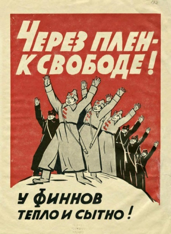
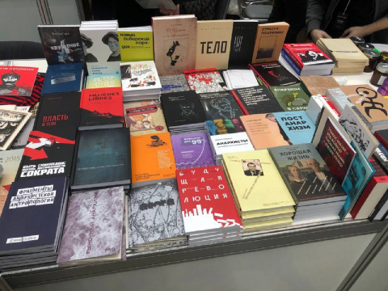

Анархия
Ежедневное Печатное Издание - издающееся Анархистами России с 2023 года.
Анархо-синдикалисты
не нейтральны к империализму

В связи с 84-летием начала Зимней войны СССР против Финляндии, публикуем историческое заявление журнала «Дело труда — Пробуждение» российских анархо-синдикалистов в эмиграции в поддержку Польши и Финляндии против агрессии СССР.
Если заменить СССР на Россию, а Польшу и Финляндию — на Украину, заявление во многом актуально и сегодня. Правда, надо заметить, что беларусы и украинцы, которых в заявлении критикуют «за подчинение комиссарам», не подчинялись без сопротивления.
Также заявление доказывает, что в прошлом российские анархо-синдикалисты не занимали нейтральную позицию между агрессором-империалистом и жертвами империализма. Если сегодня некоторые анархо-синдикалисты делают заявления в духе пацифизма, «антимилитаризма» и нейтральности перед лицом агрессии, это не соответствует исторической линии российских анархо-синдикалистов.
Либертарные издательства на книжной ярмарке NON/FICTION и презентация книги о Луи-Фердинанде Селине

Сегодня в Москве в Гостином дворе (Ильинка 4) начала свою работу книжная ярмарка NON/FICTION. Она будет работать с 30 ноября по 3 декабря с 11 до 21 часа. Программа ярмарки тут.
В зоне Независимого альянса книгоиздателей можно найти стенд с книгами "Черного квадрата", "Радикальной теории и практики", "Напильника", кооператива "Компост", directio libéra, moloko plus, "Гилеи" и др.
1 декабря в 16.15 на ярмарке NON/FICTION на площадке "Литературное кафе" редактор "Чёрного квадрата" Михаил Цовма представит книгу о Луи-Фердинанде Селине и поговорит о её герое с писателем и исследователем Анатолием Рясовым.
Встреча в Фейсбуке
Претензии принимаются на email руководителя издания - Товарища Трунаева - trunaev.ivan@icloud.com. По вопросам размещение рекламы - обращаться туда же.